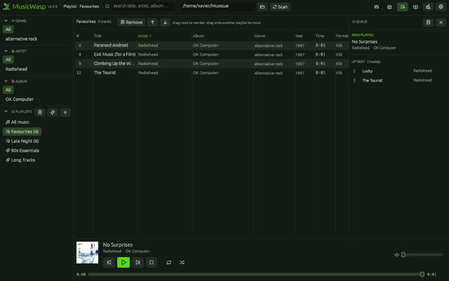
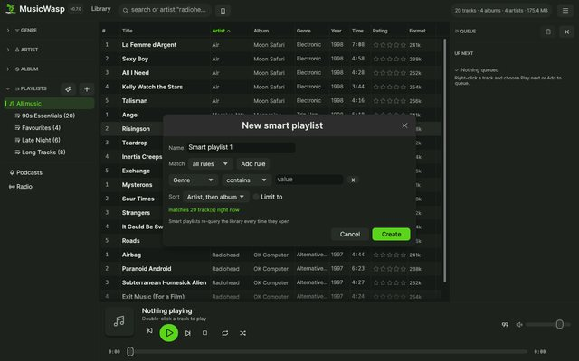
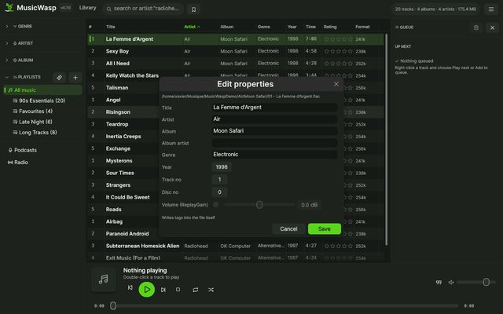
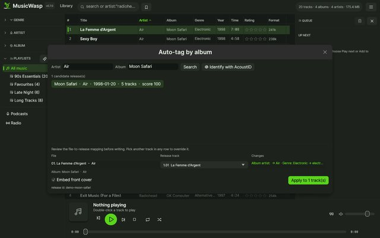
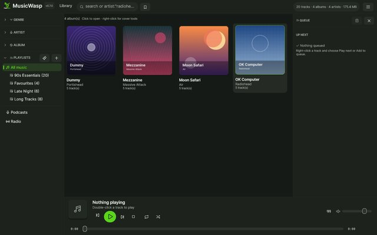
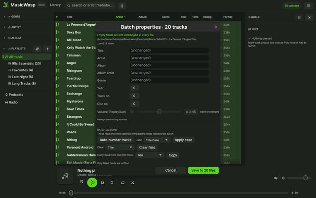
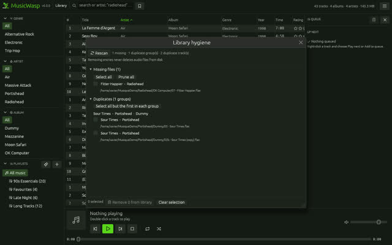
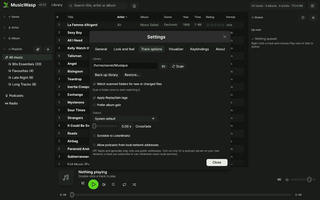

Fast local library
Incremental background scans, SQLite indexing, backup and restore, advanced field search, saved searches and persistent track columns.
Linux · Windows · GPL-3.0
A library, player and tag editor in one native app for Linux and Windows. Scan your folders, then browse, search, play, fix tags and build playlists.

Everything in one window
Incremental background scans, SQLite indexing, backup and restore, advanced field search, saved searches and persistent track columns.
Gapless playback, crossfade, ReplayGain, 10-band EQ, queue management and selectable output.
Edit properties in place, set per-track ReplayGain, batch-fix metadata, auto-tag from MusicBrainz, organize files and manage artwork with undo.
Nested playlist folders, smart rules, M3U import/export, ratings, play counts and listening filters.
English, French, German and Spanish; nine skins, custom JSON themes, background images and a live colour editor; compact and album-art layouts.
Mini player, Linux MPRIS and tray controls, native Wayland drag-and-drop, session restore and ListenBrainz scrobbling.
Look around
Click any thumbnail to open it full size. Use the arrow keys to browse.








Get started
$ sudo apt install libasound2-dev pkg-config
$ cargo build --release
$ ./scripts/install-desktop.shRelease archives include the binaries, desktop entry, icons, sample skins and translation catalogues.
Download for Linux> cargo build --releaseMSVC Rust toolchain only. SQLite is bundled and audio uses WASAPI.
Download for Windows